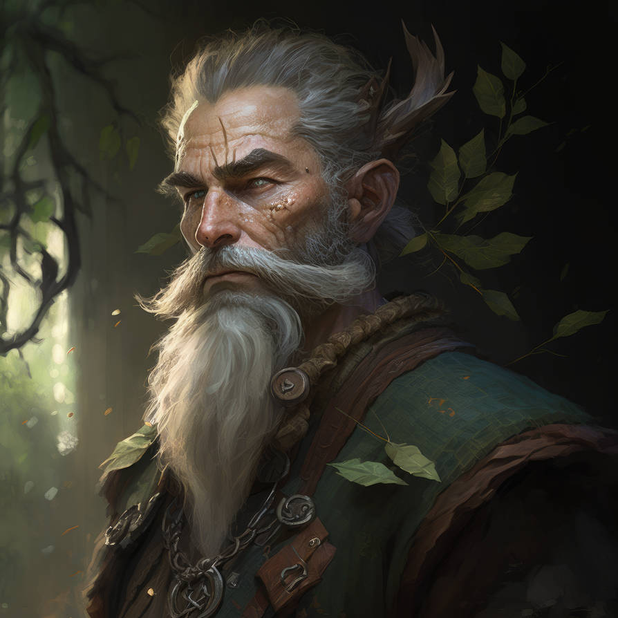

Fonts can be loaded and used, either as the default font for the whole UI, or on an individual text element.
Font files should be placed into a 'fonts' folder within the resources folder inside your project (see here). TrueType (TTF) fonts should be used.
Note, make sure the correct Font class is imported: androidx.compose.ui.text.platform.Font
The default font for all UI elements has been altered to this monstrosity... Don't ever do this!This text has a different font specified
val antonFont = FontFamily(Font("fonts/Anton-Regular.ttf"))
val caveatFont = FontFamily(Font("fonts/Caveat-Regular.ttf"))
fun main() = singleWindowApplication(
title = "Fonts"
) {
// Set the default font for the app
MaterialTheme(
typography = Typography(defaultFontFamily = caveatFont)
) {
Column() {
// All elements will use default font...
Text("The default font for all UI elements ...")
Row() {
OutlinedTextField(
label = { Text("Name") },
value = "Jimmy Smith",
onValueChange = {...}
)
Button(onClick = {}) { Text("Press Me!") }
}
// ... unless a different font is specified
Text(
"This has a different font specified",
fontFamily = antonFont
)
}
}
}
Themed Example 1
This example note-taking app shows off various theming techniques: custom fonts; background, button and text colours; custom borders; etc.
My Important NotesOrganise a get-together with the girlsMeet Jimmy for lunchContact the bank about my lost BitcoinsBank password: ThisIsMySecret123Need to think of a good way to get rich
This example game window showing some player stats, shows off various theming techniques: custom font, background and text colours, borders, etc.

Fenrick GreenleafDruidAble to call on the elemental forces of nature and can emulate the creatures of the animal world. An embodiment of nature's resilience, cunning, and fury.STR10DEX17CON9INT12WIS18CHA11
{kind=link}